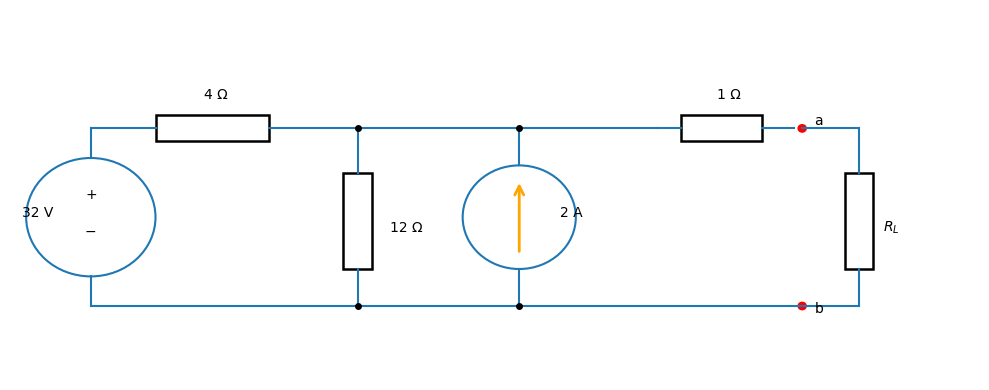
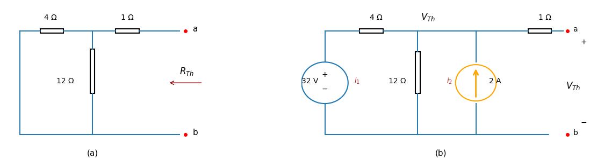

Thevenin’s theorem#
A circuit is variable might be variable while other elements are fixed. A household outlet terminal may be connected to different appliances constituting a variable load. To avoid reanalysing each time a variable element is changed, Thevenin’s theorem provides a technique by which the fixed part of the circuit is replaced by an equivalent circuit.
Using Thevenin equivalents in fault analysis#
Thevenin equivalents are widely used in power system fault analysis because they simplify a complex network into a single voltage source and impedance seen from the fault location.

Thevenin Equivalent Using Mesh Analysis#
Circuit:
- 32 V independent voltage source
- 4 Ω resistor
- 12 Ω resistor
- 2 A current source
- 1 Ω resistor to terminal a
- Find Thevenin equivalent at terminals a-b
Step 1: Find Thevenin Voltage (Vth)#
Remove the load RL.
Since RL is removed, no current flows through the 1 Ω resistor, therefore:

Define Mesh Currents#
\(i_1\) = Left mesh current (clockwise)
\(i_2\) = Right mesh current (clockwise)
The 2 A source fixes the right mesh current:
Mesh 1 Equation (KVL)#
Applying KVL around Mesh 1:
The current source fixes the second mesh current:
Substituting into the KVL equation:
Expanding:
Combining like terms:
Solving for \(i_1\):
Calculate Open-Circuit Voltage#
Voc = 12(I1 - I2)
Substitute values:
Voc = 12(0.5 - (-2))
Voc = 12(2.5)
Voc = 30 V
Therefore:
Vth = Va = 30 V
Step 2: Find Thevenin Resistance (Rth)#
Deactivate all independent sources.
32 V source -> Short circuit
2 A source -> Open circuit
Remaining network:
4 Ω || 12 Ω
Parallel equivalent:
Rp = (4 × 12)/(4 + 12)
Rp = 48/16
Rp = 3 Ω
Add the series 1 Ω resistor:
Rth = 1 + 3
Rth = 4 Ω
Final Answer#
Vth = 30 V
Rth = 4 Ω
Thevenin Equivalent Circuit#
+30 V
a o----( )----/\/\/----o b
4 Ω